Appendix 1: Footprint Benchmark Using Naava One
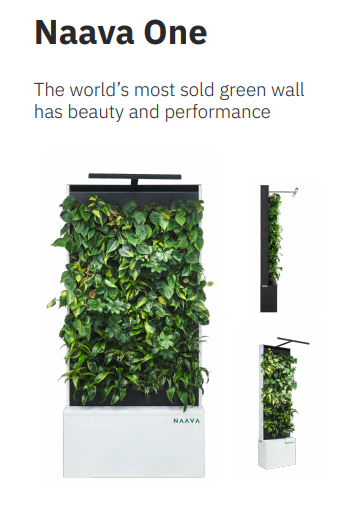
Naava One is used as a commercial benchmark to assess the practicality of limiting the proposed assembly’s base footprint to 5% of the smallest intended room area, 100 ft². The Naava brochure lists the following dimensions for its Naava One model: 1,003 mm width × 350 mm depth × 2,113 mm height (Naava, n.d.). Only width and base depth are used for this calculation.
Room floor area
Naava One base footprint
Percentage of room floor area occupied
The referenced Naava One model occupies approximately 3.78% of a 100 ft² room, demonstrating that a commercial botanical filtration unit can have a base footprint below 5% of this floor area. This provides a commercial precedent supporting the project-selected ≤5% assembly-footprint target, rather than establishing 5% as an industry standard.
This comparison covers the base footprint only. Plant and lighting projections, maintenance access and circulation clearances require separate consideration. It does not establish air-treatment suitability for a 100 ft² room.
Appendix 2: SPRE and CADR Definition
Single-Pass Removal Efficiency (SPRE) measures the percentage of a specified pollutant removed as air passes through the treatment system once.
Where:
Cin = pollutant concentration at the inlet.
Cout = pollutant concentration at the outlet.
Both concentrations must use the same units and be measured under corresponding operating conditions. A higher SPRE indicates greater removal per pass, but does not account for the volume of air treated.
Clean Air Delivery Rate (CADR) expresses the equivalent volume of pollutant-free air delivered by the system per unit time. For a single-pass assessment, it combines measured airflow with removal efficiency:
Where:
Q = measured volumetric airflow through the treatment system (m³/h).
SPRE = single-pass removal efficiency expressed as a percentage.
SPRE and CADR are pollutant-specific and dependent on operating conditions. A higher SPRE does not necessarily produce a higher CADR if airflow is lower. Neither metric alone establishes the percentage reduction achieved throughout a room, which also depends on room volume, ventilation, pollutant sources and air mixing.
Appendix 3: Flora Aer Reference-System Measurements
The team photographed and measured the existing Flora Aer prototype to establish a dimensional reference for the proposed design. Measurements covered the overall enclosure, planting arrangement, pot openings and lighting geometry. These observations informed initial space allocation, plant spacing and component positioning.
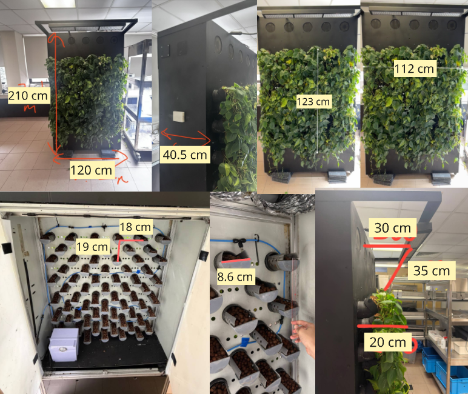
The observed pot spacing of approximately 18–19 cm provides a practical reference for the proposed 20 cm centre-to-centre spacing. Final dimensions will also account for fabrication, airflow, lighting and irrigation requirements.
Appendix 4 Development of the module interlocking mechanism
Appendix 4.1 Design objective
The interlocking mechanism was developed to connect neighbouring modules while permitting assembly and separation. Concept development addressed two related functions: transferring actuation around the module perimeter and engaging the connections between modules. Figure 28 and Figure 29 document the preliminary sketches, reference geometries and CAD exploration.
Appendix 4.2 Motion-transfer development
The first concept used perimeter linkages to transmit movement between adjacent sides of the module. The initial sketch and CAD model in Figure 28 show links arranged around the central opening, with pivoted connections at the corners. This explored coordinated movement of multiple connecting elements while retaining the central space for the module’s other components. Joint clearances, available travel and potential interference remained to be assessed.
The second concept explored rack-and-pinion motion transfer. Figure 28 shows the proposed arrangement alongside a tooth-profile reference and a geometry calculation sheet. This approach investigated using meshing teeth to transfer movement between components. Further development requires confirmation of the rack guidance, gear mounting, travel and manufacturing tolerances.
The images record alternative motion-transfer concepts rather than verified mechanisms. Physical trials are required to compare operating force, alignment sensitivity and repeatability.
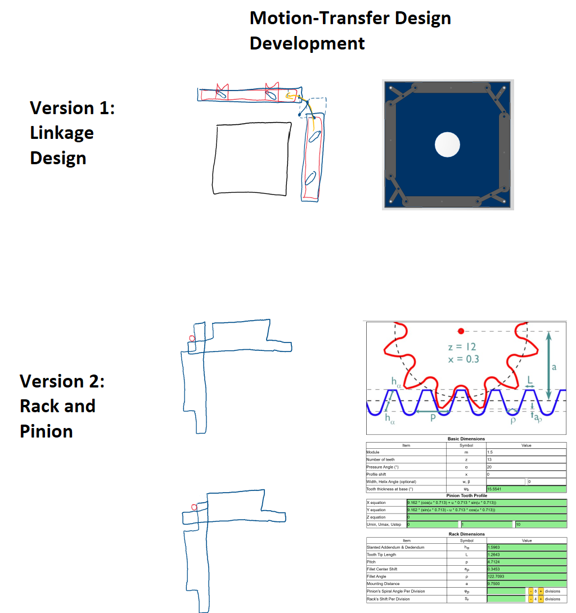
Appendix 4.3 Interlocking-interface development
The first interface concept explored an androgynous connection, in which matching interfaces could engage without separate male and female module types. Figure 29 shows connection features distributed around the module perimeter alongside an external reference for an androgynous coupling. The reference informed concept exploration; it does not establish the performance of the proposed module connection.
The second concept introduced alternating male and female features. The sketches show complementary features on neighbouring edges and sectional views exploring their engagement through a guided sliding arrangement. This separates the locating and retaining features more explicitly, but requires compatible orientation and alignment between neighbouring modules.
The side and back views further explore how the connecting features could move within a housing. Their dimensions, clearances and integration with the motion-transfer mechanism remain to be resolved.
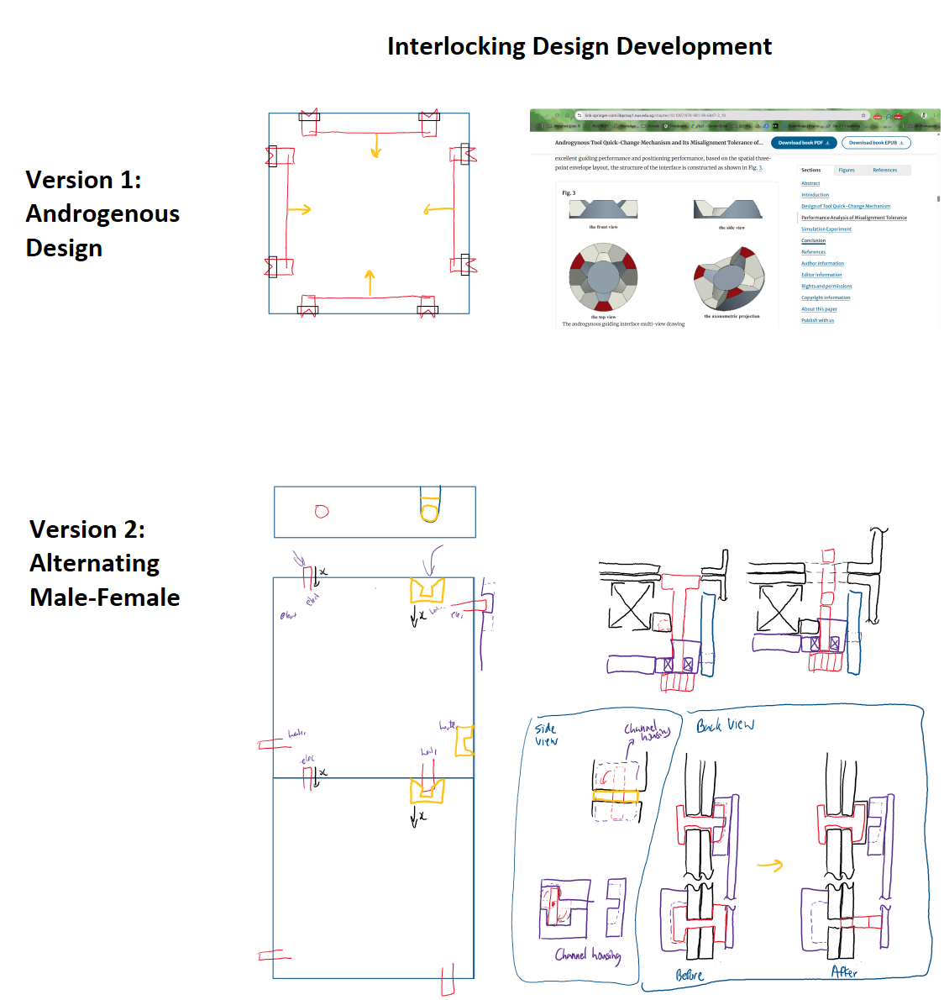
Appendix 4.4 Further development and verification
The next stage will integrate the selected motion-transfer and interlocking concepts into a dimensioned assembly. Prototype checks will assess engagement and release, alignment tolerance, operating force, accidental disengagement and wear during repeated assembly.
Structural testing must establish how loads pass through the connections and supporting frame under wet operating conditions. Connection access and clearance must also be checked against irrigation, electrical services and maintenance requirements. These results will determine whether the mechanism is suitable for the proposed assembly configurations.
Appendix 5 Baffle Simulation Comparison
Three module airflow configurations were compared to investigate how a perforated baffle redistributes air across the planting outlets. The updated results support carrying Baffle V2 forward for prototype evaluation: its reported inner, middle and outer outlet-group velocities are more closely grouped, while the velocity contours show less central concentration than the no-baffle case. This remains a preliminary design selection pending numerical and physical verification.
Simulation Setup and Comparison Basis
The models were evaluated in Ansys Fluent 26.1 using a three-dimensional, steady, pressure-based solver with SST k–ω turbulence modelling. Air density was 1.225 kg/m³ and dynamic viscosity was 1.7894 × 10⁻⁵ kg/(m·s). Coupled pressure–velocity solution and second-order spatial schemes were used. No porous zone was enabled; resistance from the planted growing medium was therefore not represented.
The no-baffle and V1 reports specify a 1 m/s velocity inlet and zero-gauge-pressure outlets. V2 reports a 1 m/s inlet result, but its boundary-condition values are clipped in the PDF export and should be checked in the case file. Figure 31 uses matching displayed contour limits: approximately 0–1.07 m/s for velocity magnitude and −0.236 to 0.682 Pa for static pressure. These fixed display limits are not necessarily the minimum and maximum values throughout each model.
Outlet Distribution and Design Decision
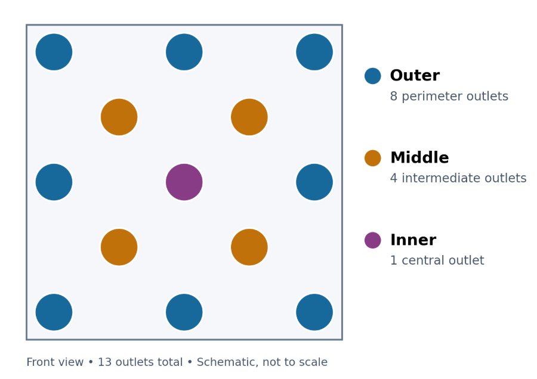
The 13 planting outlets were grouped by position: eight outer outlets along the perimeter, four middle outlets between the perimeter and centre, and one inner outlet at the centre. The same grouping was used across all three configurations to compare area-weighted mean velocity magnitudes and assess airflow distribution across the planting face.
| Outlet group | No baffle | Baffle V1 | Baffle V2 |
|---|---|---|---|
| Inner | 0.901 | 0.322 | 0.631 |
| Middle | 0.514 | 0.054 | 0.433 |
| Outer | 0.297 | 0.277 | 0.474 |
| Group spread¹ | 0.604 | 0.267 | 0.198 |
¹Highest minus lowest of the three group averages, calculated from unrounded values. This is a descriptive group comparison, not a 13-outlet uniformity index. Aggregate report totals are excluded because they also include the inlet.
No baffle: The central opening contains a pronounced high-speed region. The inner-group mean is approximately three times the outer-group mean, indicating central dominance in the reported result.
Baffle V1: The central concentration is reduced, but several intermediate openings remain dark blue while some peripheral openings carry higher-speed regions. The middle-group mean of 0.054 m/s indicates strongly uneven distribution between groups.
Baffle V2: More openings show appreciable velocity than in V1. The middle-group mean increases to 0.433 m/s and the three group means span 0.433–0.631 m/s. This supports carrying V2 forward to investigate more balanced delivery across the planting face; it does not establish uniform flow at every pot.
Status and Verification
All three exports record 50 iterations and “Not Converged”; continuity residuals are 0.1431, 0.2278 and 0.2179 for no baffle, V1 and V2 respectively. Before confirming the ranking, verify matched boundary conditions, convergence, mass balance and mesh sensitivity. Then measure flow distribution with the actual wet growing medium and seals. Velocity magnitude is not normal through-flow velocity; these results do not establish CADR, pressure loss or compliance at all leaf positions.
Velocity and Pressure Contours
Each row shows one configuration. Left: velocity magnitude (0 to 1.07 m/s). Right: static pressure (approximately −0.236 to 0.682 Pa). Original legends are retained.
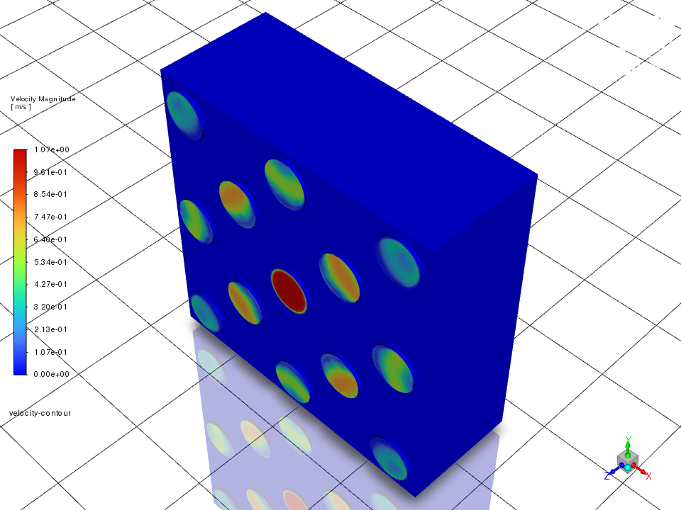
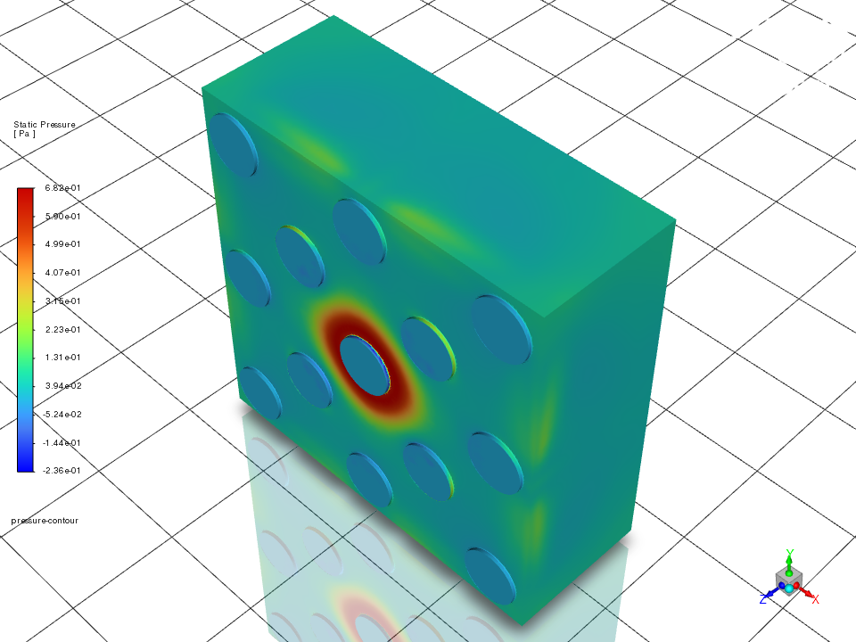
Baffle V1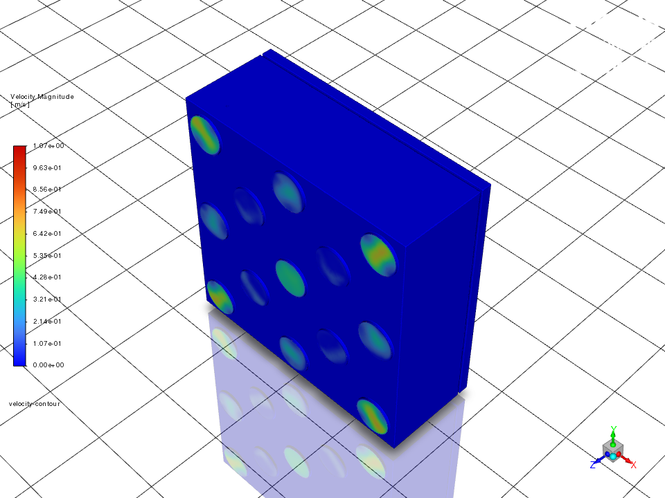
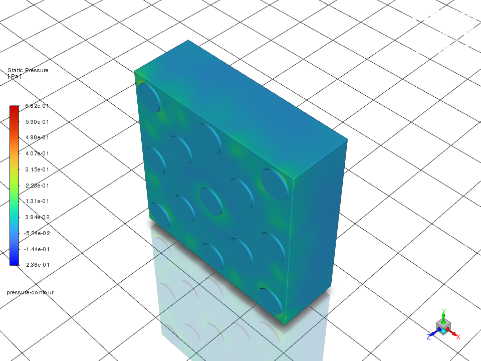
Baffle V2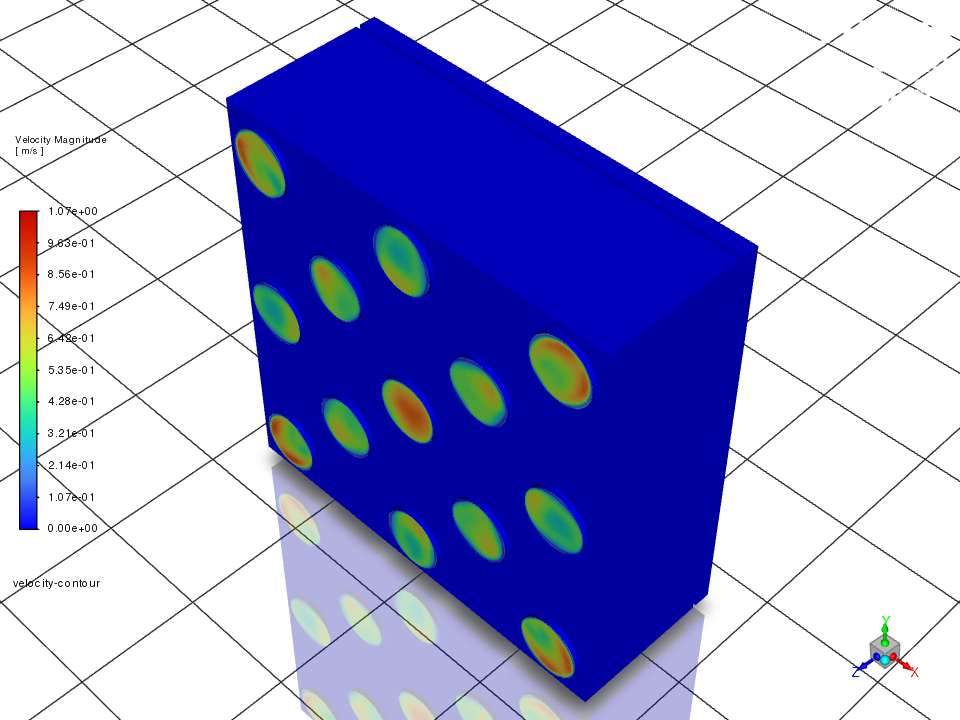
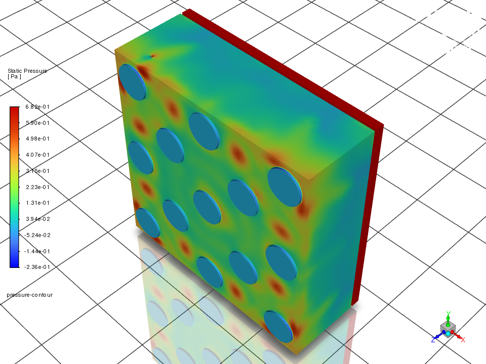
The no-baffle case has a central velocity and pressure concentration. V1 suppresses the central velocity peak but leaves weak intermediate outlets. V2 shows more distributed outlet velocities and multiple local pressure regions. The V2 red regions indicate the upper displayed pressure band; they do not demonstrate a more uniform pressure field or quantify inlet-to-outlet pressure loss.
Internal Airflow Velocity lines
Velocity-line scenes combine the internal paths with the module geometry, using comparable transparent housing views. Line density depends on seeding and display settings and is not a measure of local airflow rate.
No baffle
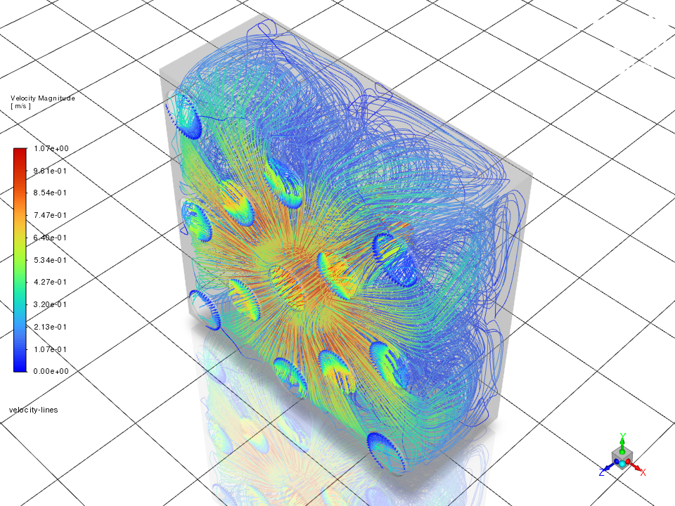
A prominent central high-speed region and curved internal paths accompany the centre-dominated outlet distribution.
Baffle V1
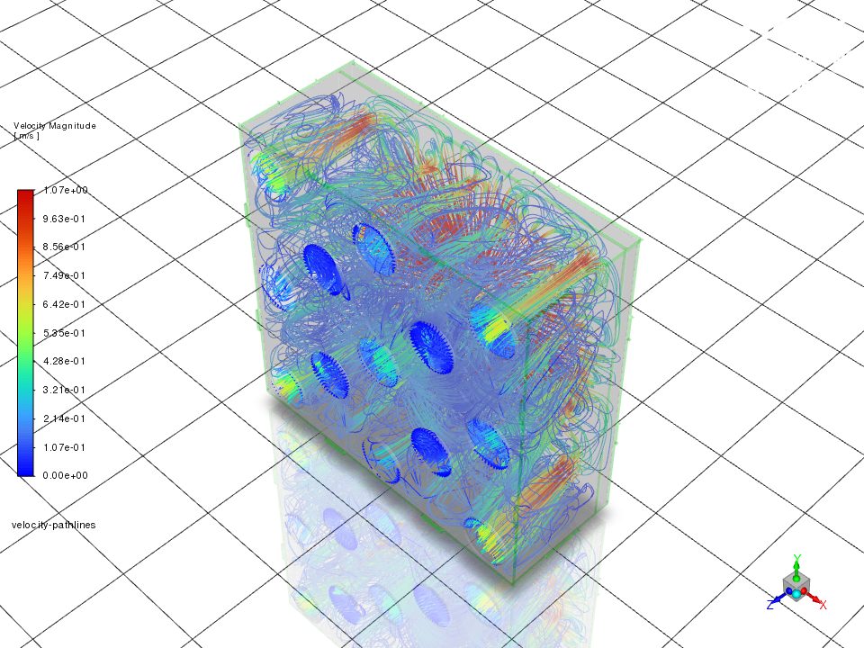
The baffle changes the internal routing, with higher-speed paths visible around peripheral regions. The outlet contour remains necessary to identify weakly supplied openings.
Baffle V2
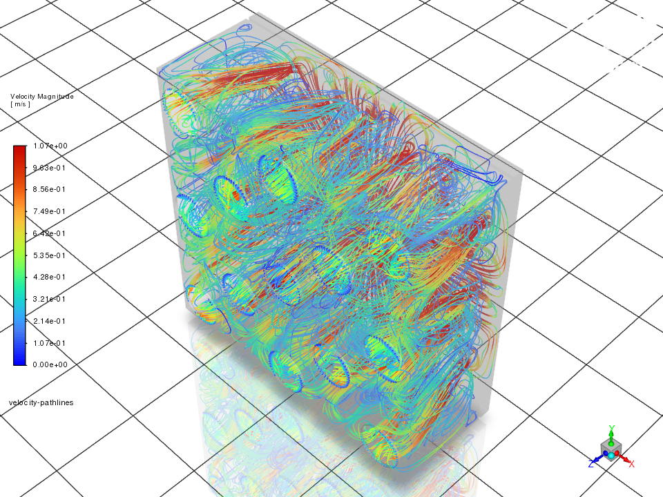
Paths extend across the internal chamber. Together with the outlet contours and group averages, the result supports further evaluation of V2 for more balanced outlet delivery.
Appendix 6 Lighting metrics and supporting calculations
Appendix 6.1 Photosynthetic photon flux density
Photosynthetic photon flux density (PPFD) measures the rate at which photons within the conventional photosynthetically active radiation range of 400–700 nm reach a surface. It is expressed in micromoles of photons per square metre per second (μmol/m²/s). PPFD therefore describes the light received at a measurement position, rather than the lamp’s electrical power or colour temperature (Apogee Instruments, n.d.).
PPFD will be measured at representative leaf positions across the planting face using a suitable quantum sensor. Measurement position, sensor orientation and lamp distance will be recorded. Minimum, maximum and mean values will describe illumination distribution.
Appendix 6.2 Daily light integral
Daily light integral (DLI) is the total photosynthetically active photon exposure received per unit area over a day, expressed in mol/m²/day (Apogee Instruments, n.d.).
For constant PPFD during the illuminated period:
Here, photoperiod is expressed in hours per day. The factors 3600 and 1,000,000 convert hours to seconds and micromoles to moles, respectively.
For the lower proposed combination:
DLI = 1.728 ≈ 1.73 mol/m²/day
For the upper proposed combination:
DLI = 4.608 ≈ 4.61 mol/m²/day
These values describe the proposed design range, not a verified biological optimum. Where daylight or lamp output varies, DLI must account for the changing PPFD throughout the day.
Appendix 7 Experiment 1 — Fan flow-rate optimisation
Appendix 7.1 Experimental procedure
Candidate challenge pollutants include formaldehyde, other selected VOCs and PM2.5. The final pollutants, emission methods and test facilities will be confirmed with the laboratory supervisor, considering the potential sources listed in Table 1. Each test will use a concentration measurement method suitable for the selected pollutant and test conditions. Formaldehyde removal will be assessed separately from other VOCs. VOC Index readings will support trend monitoring but will not be used to calculate SPRE or CADR.
Assemble one planted module with the intended fan, baffle, seals and growing medium.
Verify sensor agreement through co-location and reference comparison where available. Document instrument uncertainty and response time.
Establish a stable pollutant stream through the module, with representative upstream and downstream sampling.
Test selected PWM settings across the proposed 25–100% range.
After airflow and concentration signals stabilise, record inlet and outlet concentrations, actual airflow, temperature, relative humidity, electrical power and noise.
Conduct at least three independent runs per setting, subject to pilot-run variability and available facilities.
Substrate moisture, irrigation timing and plant condition will be documented. Sampling will represent the overall treatment flow rather than individual high-performing outlets. Leakage and bypass paths will be included in the device-level assessment.
Appendix 7.2 Airflow calculation
Airflow will be calculated from area-averaged velocities normal to the measured openings:
Where:
Q = total measured airflow, m³/h.
uᵢ = area-averaged normal velocity at opening i, m/s.
Aᵢ = area of opening i, m².
Σ = summation across all measured openings.
3600 = conversion from seconds to hours.
Each opening will be sampled sufficiently to represent its velocity distribution. Leakage flows will be assessed separately where they are not captured by the measured openings.
Appendix 7.3 SPRE and single-pass CADR
The relationships defined in Appendix 2 are applied as follows:
Where:
Cᵢₙ = representative inlet pollutant concentration.
Cₒᵤₜ = representative outlet pollutant concentration.
η = removal efficiency expressed as a fraction.
CADR_SP = single-pass clean air delivery rate, m³/h.
Concentrations must refer to the same pollutant, use consistent units and represent corresponding operating conditions. Where outlet concentrations vary substantially, mixed-outlet sampling or flow-weighted concentrations will be required.
Appendix 7.4 Operating-point selection
SPRE and CADR_SP will be plotted against measured airflow. The selected setting will provide the highest supported CADR_SP within the provisional plant-airflow constraint and acceptable moisture, noise and power conditions.
Results will include repeat-run variability and measurement uncertainty. A unique optimum will not be claimed where differences between settings cannot be resolved. The selected setting will be retained for subsequent experiments unless design changes require re-characterisation.
Appendix 8: Experiment 2 — Room-configuration analysis with a continuous source
Appendix 8.1 Experimental procedure
Three adjacent spaces of equal volume will be combined progressively by removing partitions to create V, 2V and 3V. Actual dimensions and accessible air volumes will be recorded.
One module will remain at a fixed position. The pollutant source will be placed at the far end of each configuration, following the intended room-scaling arrangement. HVAC settings, furniture, doors and source preparation will be controlled and documented.
Each configuration will receive matched baseline and operating runs. During operating runs, the fan will remain continuously at the setting selected in Experiment 1, with automatic threshold switching disabled.
Concentrations will be recorded near the source, at the module inlet and outlet, and at a documented occupied-zone position. Recording will capture a resolvable transient towards equilibrium. Sampling duration and frequency will be established through pilot tests.
At least three independent runs per condition are proposed. Source stability and measurement suitability must be demonstrated over the fitted interval. Continued evaporation from a material will not, by itself, be treated as evidence of constant emissions.
Room enlargement changes both source distance and potentially air circulation. These effects will be considered when interpreting changes in effective treatment rate.
Appendix 8.2 Baseline definition
The primary baseline will retain the planted module in position with its treatment fan switched off. Plant condition, irrigation and lighting will remain matched to the operating run. The estimated treatment rate will therefore represent the additional effect of active operation relative to the inactive installation.
This comparison does not independently quantify passive removal or isolate the contribution of plants from the growing medium and other components. A separate absent-module comparison would be required to assess the complete installation against an empty-room baseline.
Appendix 8.3 Continuous-source mass balance
For a sufficiently well-mixed room:
Where:
C = representative room pollutant concentration, µg/m³.
t = time, h.
V = room volume, m³.
G = indoor pollutant emission rate, µg/h.
Qᵥ = effective ventilation flow, m³/h.
Cₛᵤₚₚₗᵧ = supply-air pollutant concentration, µg/m³.
kₛ = first-order background loss coefficient, h⁻¹.
D = additional effective treatment rate relative to the selected baseline, m³/h.
Other concentration units may be used if all terms are converted consistently. The ventilation term assumes balanced supply and exhaust flows. Background losses may include deposition and passive uptake where these can reasonably be represented as first-order processes.
The model assumes approximately constant emissions, ventilation, supply concentration and removal coefficients over the fitted interval.
Appendix 8.4 Equilibrium concentration
At equilibrium:
Substituting into Equation Appendix 8.1:
Therefore:
Cₛₛ is the equilibrium concentration. With continuing pollutant input, this concentration is generally non-zero.
Appendix 8.5 Time-dependent concentration
Define the overall rate coefficient:
Dividing Equation Appendix 8.1 by V and substituting Equation Appendix 8.2 gives:
Separating variables and integrating:
Hence:
Where:
C(0) = concentration at the start of the analysed interval.
C(t) = concentration at time t.
K = rate coefficient, h⁻¹.
exp(−K × t) = e raised to the power −K × t.
Equation Appendix 8.5 describes an increase or decrease towards equilibrium, depending on the initial concentration. If C(0) equals Cₛₛ, concentration remains constant. A source-off equation assuming decay towards zero is unsuitable while the pollutant source continues emitting.
Appendix 8.6 Effective treatment rate
For the baseline, additional active treatment is defined as D = 0:
With the module operating:
If ventilation and background losses remain unchanged:
Therefore:
Equivalent air changes per hour are:
D is expressed in m³/h and eACH in h⁻¹.
Appendix 8.7 Fitting and interpretation
Equation Appendix 8.5 will be fitted to suitable concentration histories to estimate K and Cₛₛ. Measurements must contain a resolvable transient; equilibrium measurements alone cannot independently identify K.
Model suitability will be assessed using spatial agreement, fitted residuals, source stability and repeatability. Strong concentration gradients, changing adsorption behaviour or insufficient sensor response may prevent a reliable room-wide estimate.
If the model is unsupported, location-specific concentration histories and reductions will be reported. If K_on − K_off cannot be resolved within uncertainty, a reliable positive treatment rate will not be claimed.
Appendix 8.8 Supplementary placement and mobility assessment
Within one fixed room configuration, the module will be tested near the source and at a more distant position. Source output, HVAC operation, furniture and fan setting will remain consistent. Intake orientation will be documented.
Room-monitoring locations will remain fixed, while device-level inlet and outlet sampling will follow the module. Concentrations will be compared over a common observation period.
Time-integrated concentration is:
For discrete measurements, the trapezoidal approximation is:
I꜀ ≈ Σ{[(Cᵢ + Cᵢ₊₁) / 2] × (tᵢ₊₁ − tᵢ)} (Eqn Appendix 8.11)
Where T is the common observation duration. With concentration in µg/m³ and time in hours, I꜀ has units of µg·h/m³.
Lower integrated concentration indicates lower cumulative concentration at that monitoring location during the test; it does not independently establish room-wide CADR.
A movement trial will assess turning clearance, required operators, service disconnection and reconnection, leakage and stability. Treatment benefit and movement feasibility will jointly inform whether wheels are retained.
Appendix 9: Experiment 3 — Module-count and treatment-rate relationship
Appendix 9.1 Experimental procedure
The experiment will use a fixed room volume and progressively install one, two and three planted modules. All installed modules will operate continuously at the setting selected in Experiment 1. Module locations, spacing and orientation will be documented.
Source preparation, HVAC operation, room-monitoring positions and plant conditioning will remain consistent. Individual module airflow will be verified after each installation.
Each installed configuration will receive a matched fan-off baseline with the same planted modules present. This separates the additional effect of active operation from changes in passive surfaces introduced by adding modules. The baseline is a measurement control; module count is changed by physically adding modules.
Concentration histories will be collected for baseline and operating conditions, with at least three independent runs per condition proposed. Effective treatment rates will be calculated using Appendix 8 where its assumptions are supported.
An additional no-module reference may be used to compare occupied-zone concentrations before and after installation. Such comparisons will be reported separately from the active-treatment rates derived using configuration-specific baselines.
Appendix 9.2 Treatment-rate calculation
For each active module count:
Where:
Dₙ = effective treatment rate with n active modules, m³/h.
V = fixed room volume, m³.
K_on,n = fitted operating rate coefficient, h⁻¹.
K_off,n = corresponding baseline rate coefficient, h⁻¹.
A common baseline may be used only where the physical arrangement and background conditions remain sufficiently consistent.
Incremental capacity from additional modules
The additional active treatment capacity associated with installing the second and third modules is:
For fixed room volume V, the corresponding increases in equivalent air changes per hour are:
These quantities describe the measured gain from each installation step under the tested arrangement. Scaling efficiency remains:
Both incremental capacity and scaling efficiency will be interpreted with measurement uncertainty. Because Dₙ uses a matched inactive-installation baseline, it represents additional active treatment rather than the total passive and active effect of the installed system.
Appendix 9.3 Scaling efficiency
For a measured single-module treatment rate D₁, ideal additive performance predicts:
Scaling efficiency is:
For two modules:
For three modules:
Percentage scaling efficiency is:
Values near one, or 100%, indicate approximately additive performance. Departures will be examined alongside measurement uncertainty, source variability, individual airflow and module interactions.
Scaling efficiency will only be interpreted when D₁ is positive and sufficiently resolved. Testing up to three modules will not establish the performance of larger assemblies.
Appendix 10: Sizing-guide calculations and interpretation
Appendix 10.1 Room-volume calculation
For floor area A and ceiling height H:
Where:
V = room volume, m³.
A = floor area, m².
H = ceiling height, m.
Floor area expressed in square feet will be converted using:
Appendix 10.2 Equivalent air changes per hour
For measured effective treatment rate Dₙ:
Where Dₙ is in m³/h and eACHₙ is in h⁻¹. These values represent equivalent treatment capacity, not outdoor-air ventilation.
If treatment rate remains constant:
Doubling or tripling room volume therefore reduces eACH to one-half or one-third respectively. Experiment 2 will assess whether the constant-treatment-rate assumption is supported.
Appendix 10.3 Required treatment capacity
For an adopted target eACH:
Or:
The target must have a stated pollutant and application basis. Configuration recommendations will compare D_required with measured treatment rates and their uncertainty.
Appendix 10.4 Module-count projections
Where additive scaling is supported, a preliminary module-count estimate is:
Here, ceiling means rounding upwards to the nearest whole module.
This calculation assumes each additional module provides the same effective treatment rate as the first. Measured multi-module results will take precedence. Estimates beyond the tested range will be labelled as projections and checked against structural and service limits.
If Experiment 2 identifies substantial room-configuration effects, sizing recommendations will use configuration-specific treatment rates rather than one universal D₁.
Appendix 10.5 Limits of the sizing guide
The guide will state the tested pollutant, operating setting, ceiling height, room conditions, uncertainty and supported module arrangements.
Equal eACH does not guarantee equal equilibrium concentrations. As derived in Appendix 8:
Final concentrations also depend on pollutant emissions, incoming-air quality, ventilation and background removal. The guide will therefore describe measured treatment capacity without implying a guaranteed concentration or health outcome.